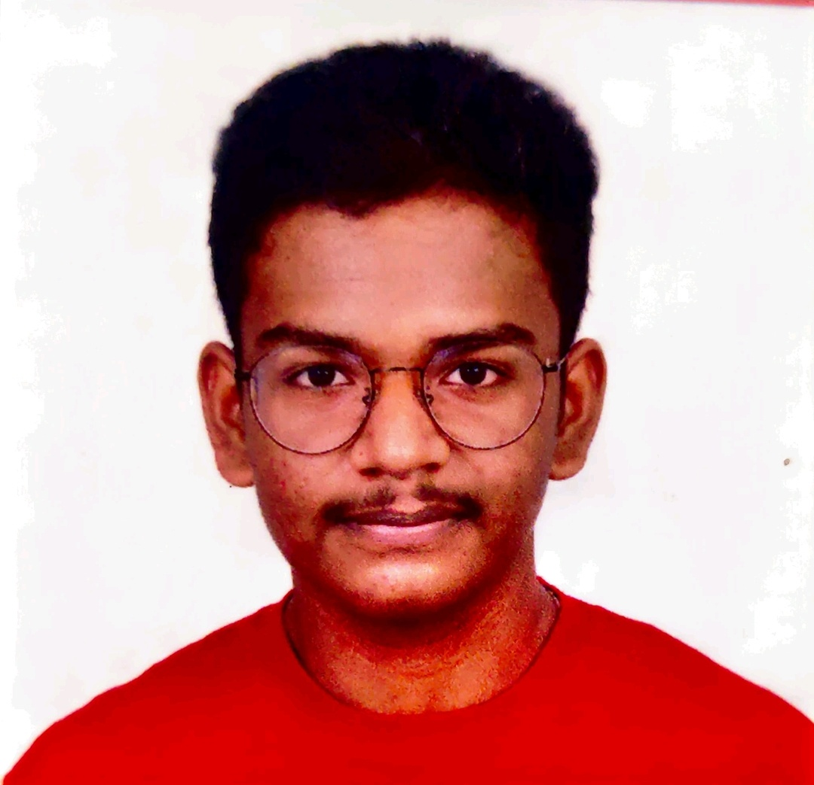

Sai Aswin

Summary
I am a BTech CSE (IoT) student from SRMIST (SRM University).
I love to learn
new things everyday. I have a very strong passion towards coding!
Dedicated Computer Science Engineering student with a strong passion for software development and coding. Seeking opportunities to grow, leverage my skills and
contribute to real-world projects as an aspiring software engineer!
Education
- Bachelor of Technology - BTech in Computer Science Engineering with IoT
SRM University, Chennai, Tamil Nadu
Expected Graduation: June 2027
- Senior Secondary
Srimathi Sundaravalli Memorial School (SSM), Chennai - CBSE
Graduated: March 2023; Class 10 - 87.8%; Class 12 - 89.2%
- Participated in student council and debate club.
- School
Rachel Carson Middle School, VA, USA
Graduated: May 2018
- Taught classes for kindergarten students.
- Participated in competitive speaking and spell bee competitions.
- Engaged in after-school community work.
- Elementary/Primary School
McNair Elementary School, VA, USA
Attended: August 2016 - May 2017
- Volunteered in student service programs, assisting teachers.
- Helped with note making, flashcard creation, and traffic management.
- Reid Elementary School, CA, USA
Attended: August 2015 - May 2016
- Sri Sankara Vidyalaya Matriculation Higher Secondary School, Chennai, India
Attended: June 2008 - June 2015
Clubs and Participations
Microsoft Learn Student Ambassadors SRM (MLSA SRM) Club -- Tech Associate
Skills (out of five ⊛)
- Python -- ⊛⊛⊛⊛
- MySQL -- ⊛⊛⊛⊛⊛
- C -- ⊛⊛⊛ [In Progress]
- HTML -- ⊛⊛⊛⊛ [In Progress]
- CSS -- ⊛⊛⊛ [In Progress]
Non Technical Skills
- Extremely well communicating skills
- Quick at learning and adapting to new surroundings
Links and Socials